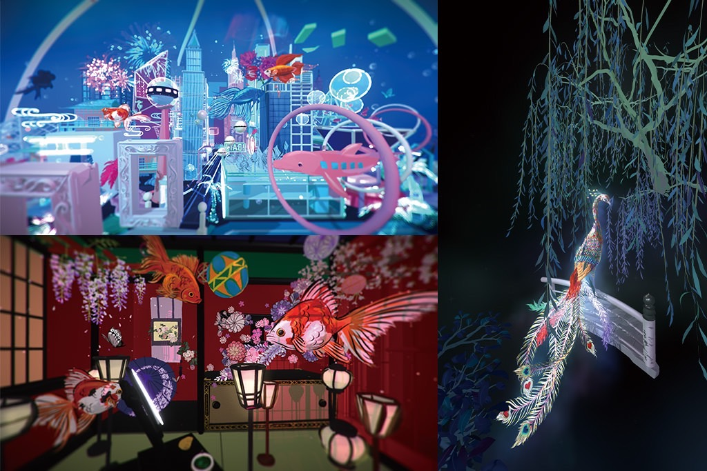
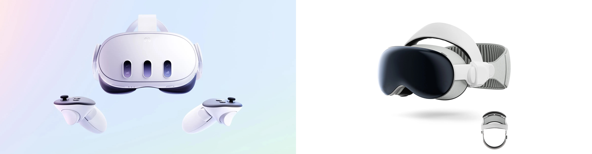
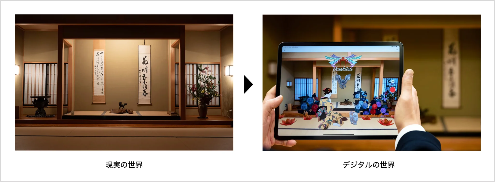
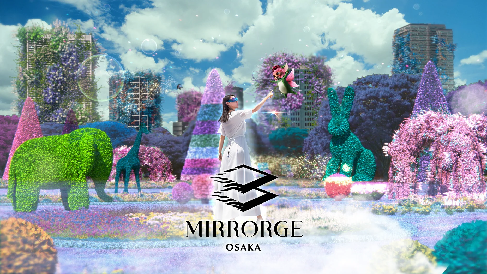
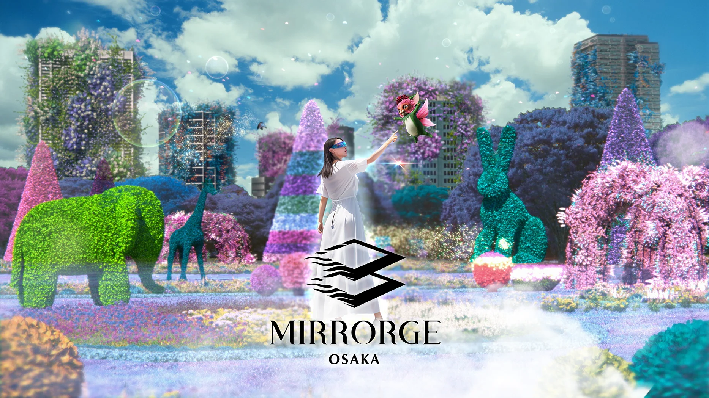

What is VR art?
仮想現実 (Virtual Reality) 空間内で描かれる2次元・3次元のアート作品のことを指す。 専用のデバイスであるHMD (Head Mount Display)やモーションコントローラーをなどのデバイスを装着するのが特徴的。 VR空間の中で自由に描画・造形された作品は、物理法則や様々なコストなどの現実の制約を超えた創作や、 観る者が作品の中に入り込むような没入感のある体験が可能にする。
HMDとは、VRアート制作の中心となる頭に装着するデバイスであり、目の前に仮想空間を広げる役割を果たす。 代表的な製品には、Meta Quest 3やApple Vision Proが挙げられる。 これらのHMDは、モーションセンサーや空間認識機能、ハンドトラッキングや視線トラッキングなどの機能を持つ。
Other Devices
VRアートを制作するためのハードウェアはHMDだけでなく、以下のようなものもある
Specific Example
Digital Artist | せきぐちあいみ
VRアートを描くライブパフォーマンスを世界中で披露している。 2018年に世界初のVRアート個展を開催し、2021年には初のNFTアートが約1,300万円で落札される経歴を持つ。
Mixed Reality
現実世界と仮想世界を組み合わせたMR(Mixed Reality)は、デジタルアートにおいて3Dオブジェクトやインタラクティブな要素を現実世界に統合し、新しい表現方法を提供することが可能になる。これにより、アーティストは現実空間で没入感のあるアート体験を創造できるようになった。
MIRRORGE OSAKA | ミラージュ大阪
現実世界と仮想空間をシームレスに融合させる最新の空間コンピューティング技術によって実現した、街に新たな体験価値を創出する新時代の空間エンターテインメントプロジェクト。 Apple Vision Proを使用して、先進技術と細部までこだわった世界観を体験することができる。
 
